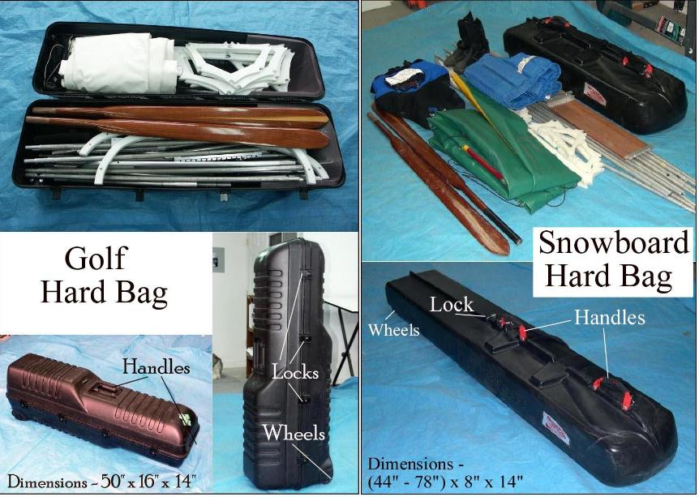

| Transport ( 1 of 6 ) | Menu Last Page Next Page |
|

For transport, use a hard case if possible. Either a golf case or snowboard case provide excellent protection for both frame and skin. The snowboard case is telescoping, and can accept stringer sections over 6 feet. Both hard cases have handles, straps, and wheels for ease of use.
|
|